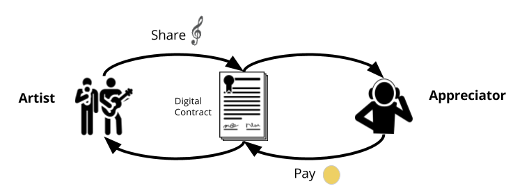
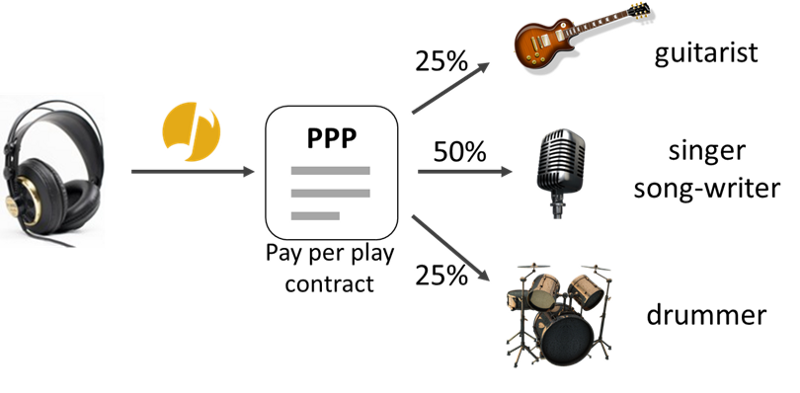

How Musicoin Works?
A design for freedom in the 21st century and beyond (white paper)
Musicoin is designed to support the creation, publication, and consumption of music as a cycle. The system uses a special algorithm to generate a currency called Musicoin (MC), as well as another algorithm to support automated contracts ("smart contracts") which enable creators and consumers to exchange value in a frictionless environment. With a unique currency and a solid contract system, large scale transactions around music becomes possible.
Sharism
Sharism is the fundamental philosophy underlying the Musicoin system, and it is from this perspective that people are enabled to share their creations online and be paid every time their creation is played (or read, enjoyed, etc. depending on the context). So for a musician's work that is released to a system, the system traces the usage and returns the prescribed value directly to them in a way that is in line with the principle of equal energy exchange. The Currency
The Founders of Musicoin designed a global currency (MC) to support the requirements of the Musicoin system. The currency is not issued by a single entity, but by a network of computers through a process known as ‘mining’. This system, which has been proven by other cryptocurrencies such as Bitcoin, Ethereum, Dash and others, involves many computers around the globe running a complex computer algorithm, with the entire network collaborating to generate a currency which can’t be counterfeited, can’t be “double spent”, and can’t be manipulated or otherwise damaged through negligence or malicious intent. As a fully visible, transparent and decentralized system, the traditional default of utilizing a centralized controlling authority (central bank etc.) is made obsolete, and a thing of the past.
Smart Contracts
With the trust-able and immutable MC currency, smart contacts can then be created to run automatically to ensure that payments are made correctly, directly and immediately, and also that the correct content is shared to the requesting party. A series of contract templates have been designed that can be used by creators for different types of usage and consumption. The first, and perhaps most important contract is the Pay-Per-Play (PPP) contract. PPP automates the unit consumption of music (i.e. streaming of one song) so that once the listener clicks ‘play’, there is an immediate transaction which pays the creator directly as specified within the contract. Again, each and every transaction is recorded and made visible on the network, eliminating any possibility of tampering or removal. 
Other smart contract templates will be added to the system in future, enabling creators to control and expand their capacity to license works for a wider range of uses, and also to provide contracts with greater flexibility and additional features.
Musiconomy
The mechanisms described above are designed to set a foundation that empowers musicians to release their works to the system, while enabling listeners to enjoy them in a seamless, frictionless flow. As this process expands and repeats itself, it is anticipated that it will eventually become a large scale phenomenon requiring no further intervention. The more releases, the more listeners; the more listening, the more income to musicians; the more income, the more creations. It is precisely the positive feedback loop described by the Sharism philosophy. It is even conceivable that Musicoin cryptocurrency could eventually be redeemable for other types of music-related goods and services i.e. concert tickets, merchandise, tour packages, or potentially even redeemed for general consumer goods, travel services etc.
Future potential
The Musicoin team envisions a long and expansive future for the Musicoin system as a whole. With music being indispensable to life in human society, the completeness of the data recorded on the Musicoin system may eventually serve as a useful source of reference to pre-select songs for playlists using AI. Imagine a machine that plays what it ‘knows’ you will want to hear when you want to here it. That reality is just around the corner, and Musicoin comes designed to integrate seamlessly with such a machine.
Pay Per Play(PPP)
PPP is the basic smart contract of the Musicoin system that enables musicians to release their works and be paid directly each time one of their songs is streamed.
Blockchain
Blockchain is the globally distributed network technology behind the Musicoin system. The blockchain is what maintains the integrity of all records and data, and it is the source from which the MC cryptocurrency is derived.
Future Potentials
Apart from Pay-Per-Play, there are other contracts in development, including playlist, sharing and additional licence contracts. These contracts are intended to incentivize listeners and other musicians to share and recycle music in different formats and venues according to the permissions and the will of the creator(s).